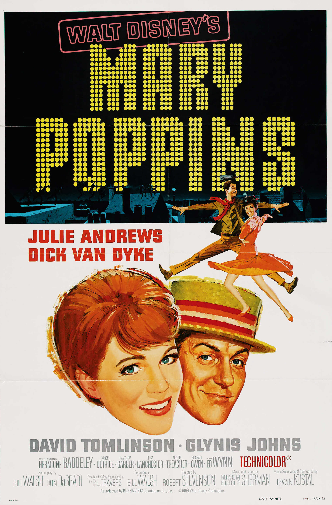

Mary Poppins
37th Academy Awards
(Oscars 1965)
13 Nominations, 5 Awards
| Nominations | ||
|---|---|---|
| Category | Nominees | Result |
| Best Picture | Bill Walsh and Walt Disney | Nominated |
| Actress | Julie Andrews | Won |
| Directing | Robert Stevenson | Nominated |
| Writing (Screenplay--based on material from another medium) | Bill Walsh and Don DaGradi | Nominated |
| Cinematography (Color) | Edward Colman | Nominated |
| Film Editing | Cotton Warburton | Won |
| Art Direction (Color) | Carroll Clark, Emile Kuri, Hal Gausman, and William H. Tuntke | Nominated |
| Costume Design (Color) | Tony Walton | Nominated |
| Special Visual Effects | Eustace Lycett, Hamilton Luske, and Peter Ellenshaw | Won |
| Sound | Robert O. Cook | Nominated |
| Music (Music Score--substantially original) | Richard M. Sherman and Robert B. Sherman | Won |
| Music (Scoring of Music--adaptation or treatment) | Irwin Kostal | Nominated |
| Music (Song) "Chim Chim Cher-ee" |
Richard M. Sherman and Robert B. Sherman | Won |